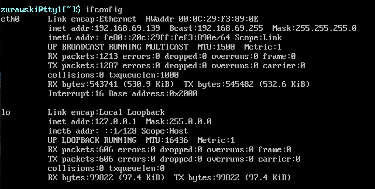
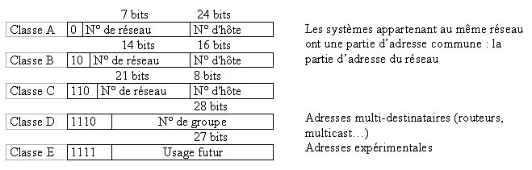

L'objectif de ce tutoriel est d'apprendre à mettre en place un serveur DHCP sous Linux.
Un serveur DHCP (Dynamic Host Configuration Protocol) a pour rôle de distribuer de façon automatique, des adresses IP à des clients pour une durée déterminée.
Au lieu d'affecter manuellement à chaque hôte une adresse statique, ainsi que tous les paramètres tels que (serveur de noms, passerelle par défaut, nom du réseau), un serveur DHCP alloue à un client, un bail d'accès au réseau, pour une durée déterminée (durée du bail). Le serveur passe en paramètres au client toutes les informations dont il a besoin.
C'est quoi un bail ? Il s'agit d'un "contrat" passé entre le serveur et le client qui inclue notamment la durée de vie de l'adresse Ip qu'attribue le serveur au client.
Une fois le serveur démarré, un client voulant se connecter, diffuse un message dhcp-discover pour "trouver" un serveur DHCP. Lorsque le client trouve le serveur DHCP, ce dernier lui attribue automatiquement une adresse IP.
Rappel sur la configuration statique d'une adresse IP
:o Oula, pas trop vite ! Ca veut dire quoi statique?
Le mot clé statique indique que c'est l'utilisateur qui va lui même choisir quelle adresse attribuer à sa machine. En réalité, on attribue une adresse IP à une interface réseau d'une machine. C'est à dire, que si votre machine dispose d'un seule carte réseau, nous pouvons attribuer une seule adresse IP, si elle en possède deux, on peut attribuer deux adresses IP, etc ..
Voici la commande pour lister les interfaces présentes sur votre ordinateur:
ifconfig
Vous obtenez ce résultat :

Vous ne comprenez pas grand chose à ce que vous voyez ! Pas de panique, ces quelques explications vont pouvoir vous aider:
En fait, la commande indique que votre ordinateur possède deux interfaces: eth0 et lo. Cette dernière est en fait la boucle locale, une interface virtuelle présente sur tous les ordinateurs. Celle qui va nous intéresser est l'interface eth0. Voici les informations que l'on peut extraire pour cette interface:
"Le lien de l'interface est de type Ethernet et son adresse MAC est 00:0c:29:f3:89:0e. Son adresse IP est 192.168.69.139"
Étudions maintenant comment attribuer une adresse IP statique;
Il existe deux façons de le faire:
A l'aide de la commande "ifconfig" :
A l'aide de la commande "ifconfig" :
Cette méthode est rapide mais présente le désavantage que votre configuration sera effacée à chaque redémarrage de votre machine. Cependant elle reste un bon compromis si vous souhaitez faire une configuration rapide. Voici la commande a utiliser:
ifconfig eth0 192.168.21.2 netmask 255.255.255.0
Vérification de l'adresse:
Constatez par vous même que votre adresse IP a bien été prise en compte:
ifconfig eth0
Explications:
- eth0: il s'agit de l'interface que l'on veut configurer. - 192.168.21.2: il s'agit de l'adresse IP que l'on souhaite attribuer à cette interface. Ici, il s'agit d'une adresse de classe C. - netmask: il s'agit d'un mot clé qui précise que l'adresse suivante sera le masque de sous réseau utilisé avec cette adresse. - 255.255.255.0: il s'agit du masque de sous-réseau par défaut d'une adresse IP de classe C.
Si vous ne connaissez pas les types de classes d'adresses IP, voici un schéma vous permettant de les identifier:

:soleil: C'est fait ! Votre interface possède désormais une adresse IP. Voyons maintenant comment faire pour que cette adressage deviennent persistant, c'est à dire qu'il soit le même après redémarrage de votre ordinateur.
A l'aide du fichier "interfaces" :
A l'aide du fichier "interfaces" :
Ce fichier "interfaces" contient la configuration réseau de chaque interface de votre ordinateur. Pour l'ouvrir, tapez simplement cette ligne:
vi /etc/network/interfaces
C'est quoi "vi": il s'agit d'un éditeur de texte présent sous Linux, qui va nous permettre d'ouvrir notre fichier.
Une fois le fichier ouvert, remplacez simplement les quelques lignes présentes à l'intérieur, par celles-ci:
- iface eth0 inet static: pensez à bien préciser le nom de l'interface que vous souhaitez configurer (ici eth0). Remarquez également le mot clé static, celui-ci nous sera utile par la suite :) - address 192.168.21.2: il s'agit de l'adresse que l'on souhaite attribuer. - netmask 255.255.255.0: il s'agit du masque de sous réseau. - broadcast 192.168.21.255: il s'agit de l'adresse de broadcast de notre réseau. Voyez comment on constitue l'adresse de broadcast: On prend les 3 premiers octets de l'adresse IP de classe C et on rajoute le 4 octet comme étant à 255. Si nous avions choisi d'utiliser une adresse de classe B, l'adresse de broadcast aurait été X.X.255.255 ! Facile non? :magicien:
Voici la commande a utiliser sous Linux Debian:
/etc/init.d/networking restart
Constatez par vous même que votre adresse IP a bien été prise en compte:
ifconfig eth0
Voilà, vous savez désormais attribuer une adresse IP de manière statique! Passons maintenant à la partie plus intéressante, sur l'adressage dynamique et la mise en œuvre d'un serveur DHCP.
Il suffit simplement de taper cette commande en mode root:
sudo apt-get install server-dhcp3
Prenons un exemple concret pour expliquer l'intérêt de la mise en place d'un serveur DHCP.
Citation : Exemple
Vous avez êtes connectés à Internet à l'aide d'un câble ethernet car votre fournisseur d'accès à Internet ne vous a pas vous fournit de routeur wifi. Et c'est embêtant car si un ami vient chez vous, pour lui donner la connexion internet, soit votre routeur dispose suffisamment de prise ethernet, soit il faut faire des sacrifices. Vous avez plus d'un tour dans votre sac, vous décidez de transformer votre pc en un routeur wifi. Dans ce tuto nous ne parlerons pas de comment faire ceci, mais supposons que vous avez réussi à le faire. Sans serveur DHCP, votre ami doit choisir judicieusement une adresse IP, qui d'un doit correspondre au bon réseau, et de deux ne doit pas être déjà utilisée par une autre machine. Grâce au serveur DHCP, votre ami se voit attribuer une adresse IP automatiquement pour pouvoir surfer sur le net, sans se poser de questions sur le choix de l'IP.
1, 2, 2 ... c'est parti ! :p
Du côté client :
Vous vous souvenez du fichier "interfaces" ?
Il va être nécessaire d'ouvrir le fichier sur chaque ordinateur client; c'est à dire sur chaque ordinateur qui veut se voir attribuer une adresse IP:
vi /etc/network/interfaces
A l'intérieur, copiez simplement cette ligne (en l'adaptant suivant l'interface de chaque ordinateur):
iface eth0 inet dhcp
Explications:
- iface eth0 inet dhcp: Vous voyez ce qui change par rapport à l'attribution statique? C'est uniquement le mot clé "dhcp" qui indique que l'interface va se voir attribuée une adresse IP automatiquement! Facile non? :-°
Du côté Serveur :
C'est le serveur que l'on va configurer pour qu'il attribue automatiquement une adresse IP à chaque client. Nous avons choisi de le configurer de la manière suivante:
Citation : Notre configuration !
Configuration du serveur dhcp pour qu’il attribue un bail par défaut de 220s, d’une durée maximale de 360s, pour le nom de domaine sdz.net, avec une plage d’adresses IP allant de 192.168.21.30 à 192.168.21.70.
La configuration du serveur se fait dans un fichier où l'on va renseigner tous les paramètres nécessaires. Ce fichier est accessible en tapant cette ligne de commande:
vi /etc/dhcp3/dhcpd.conf
Une fois le fichier ouvert, il suffit d'y ajouter les informations suivantes:
- Option domain-name « sdz.net » ;: Indiquez ici le nom de domaine que vous utiliserez. - Default-lease-time 220 ;: Indiquez ici la durée du bail par défaut. Il s'agit du temps de vie d'une adresse IP. Il s'exprime en secondes. - Max-lease-time 360 ;: Il s'agit du temps de vie maximum d'une adresse IP. Il s'exprime en secondes. - Subnet 192.168.21.0 netmask 255.255.255.0 {: Indiquez sur cette ligne l'adresse réseau que vous souhaitez utiliser et son masque associé. - Range 192.168.21.30 192.168.21.70 }: Il s'agit de la plage d'adresses IP que vous souhaitez utiliser dans le réseau 192.168.21.0. Euhh, c'est quoi une plage ? En français, ça veut dire: "Mon serveur attribue des adresses IP à partir de cette adresse là, jusqu'à cette adresse ci". Ainsi un client peut, par exemple, se voir attribuer l'adresse 192.168.21.41
Vous suivez jusqu'ici? Très bien, il ne nous reste plus qu'a configurer manuellement l'adresse IP de notre serveur:
ifconfig eth0 192.168.21.2 netmask 255.255.255.0
Voilà, toute la configuration est prête, tant du côté serveur que du côté client! :)
La dernière étape, est la mise en service de notre serveur DHCP:
Du côté Serveur :
Il est nécessaire de démarrer notre serveur DHCP:
/etc/init.d/dhcp3-server start
Du côté client :
Il est nécessaire de redémarrer les interfaces réseaux de chaque ordinateur client afin qu'elles se voient attribuer une adresse IP. Vous pouvez le faire de cette façon, que vous devez connaître maintenant :) :
/etc/init.d/networking restart
ou bien de cette façon: (trou trou, ce sera toi que je vais utiliser ..) :p
dhclient eth0
Vérification de l'adresse:
Constatez par vous même que votre adresse IP a bien été prise en compte sur chaque client :
En fait, l'interface de votre ordinateur, à laquelle on attribue une adresse IP, n'est autre que l'interface de votre carte réseau. Votre carte réseau possède un identifiant unique, appellé adresse MAC.
L'objectif est de dire au serveur: "Quand ce messieurs, avec cette adresse MAC là, demande à se voir attribué une adresse IP automatiquement, tu lui attribues l'adresse IP configuré en fonction de cette adresse MAC".
Du côté Serveur :
La configuration de fait toujours au niveau du fichier dhcpd.conf:
vi /etc/dhcp3/dhcpd.conf
Il suffit simplement d'ajouter ce bloc de lignes pour chaque attribution automatique d'adresse IP en fonction de l'adresse MAC:
Comment trouver l'adresse Mac de mon interface ? Il suffit simplement d'exécuter la commande ifconfig, vous la connaissez maintenant ;). Celle-ci listera les interfaces disponibles et leurs adresses MAC associées.
/etc/init.d/dhcp3-server restart
Explications:
- Host salon{: Le nom de la machine - Hardware ethernet 00 :19 :d1 :72 :d8 :72 ;: L'adresse MAC de l'interface - Fixed address 192.168.21.40 ;}: On fixe l'adresse 192.168.21.40 pour cette interface donnée.
Voilà ! Vous savez maintenant tout sur la mise en place d'un serveur DHCP sous Linux. J'espère que mon mini-tuto vous aura permis de constater la puissance d'un tel serveur !